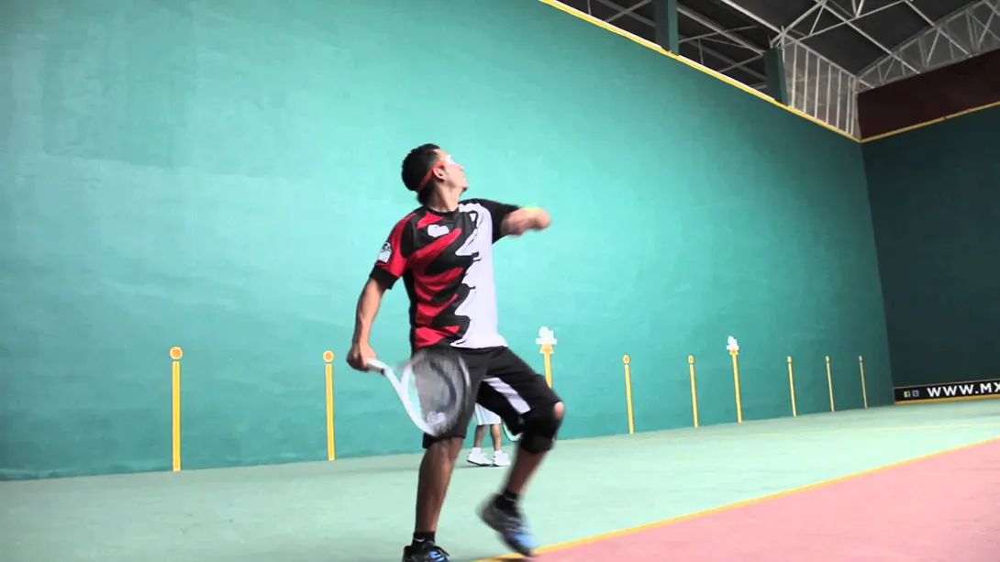
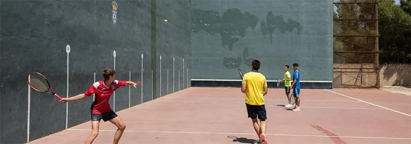

What Is Frontenis?
Here is the second in my series on Other Rackets Sports. In this article, I will describe Frontenis, which is a sport where tennis and squash had a baby – more or less.
The first thing to tell you is that Frontenis is played on a Fronton. A fronton is also known as a Basque Pelota Court. There are a variety of types of court, some with one wall, some with two and others with three walls. The three wall variety is generally the largest. In addition to the number of walls, they also have lengths and heights. As you can see, it’s pretty complicated compared to squash.
Also, the fronton is used for a variety of sports, all hitting a ball against the front wall though (I’ll be exploring some of those sports in future articles). Lastly, the three-walled variety have the right hand side wall missing. The front wall also has an area, just like the squash tin, where the ball is not allowed to hit. It’s about twice the height of a squash tin. Oh, I’ve put some links at the bottom of this articles if you want to explore the topic more.
See that big green wall? That's part of the fronton.
Frontontenis was invented in Mexico in 1900. It changed its name to frontenis a little later. Fronton courts were built around the world and its history is not very clear in the sense that people played similar, but independent games against walls for many years. This is where the history of tennis, fives, squash, rackets and lots of other games gets a little muddled. So, back to Mexico in 1900. It seems that a few famous tennis players started playing on a fronton with their tennis rackets and a tennis ball. This became popular and more people started playing it.
At the time, there were a lot of fronton because Pelota games were incredibly popular. Essentially, people used to hit the ball with their hand against the wall. Over time, more people started to use a racket instead of their hand and the sport expanded into South America and then to Europe, around the 1920s, via Spain and France, which has lots of frontons (my town has 5!).
You can just see the yellow ball near the dark sripe on the left wall.
Eventually, federations were created and rules set etc – the same as other rackets sports – they started with a few people playing and slowly expanded. Different countries and even towns have different rules! At some point in time, the tennis ball was changed for a rubber ball with no felt. In fact, I think it’s the same ball as a racketball ball. The rackets can be tennis rackets, but they do make specific frontenis rackets that are a little longer than a tennis racket and a littler stronger too. Interestingly, the rules say that the dimensions of a racket are “unlimited”, but of course you need to think about the weight and feel too.
Frontenis is played both in singles and doubles, although only doubles is played in international competitions. That said, 9 times out of 10, doubles is played where I live.
My Experience With Frontenis
This is my town, and this view is a couple of minutes walk from where I live.
I live in the Basque Country. As I have said, there are 5 frontons in my town (pop. 20,000 in 2018) and I have played with both a tennis ball and the proper ball, and it’s much better with the proper ball. Interestingly, all the players switch hands when the ball is close to the side wall, just like they do in most other sports played on a fronton. They don’t do it in Cesta Punta (Jai Alai) becasue the baskets is wrapped onto your hand/arm.
When i first played and used a combination of tennis and squash swing on my backhand, the three other players looked at me with open mouths – no seriously. It was as if I had just performed magic. It was really funny. They all stopped at the end of the first point and asked me why I did it. After that, I became know as the “weirdo who hit backhands” – in a friendly way.
It’s a lot of fun to play and in some ways it’s great for your squash. I spent 6 months practice my boasts thinking I could win lots of points, but the reality is that because the fronton is so big, the boast doesn’t work in the same way as it does in squash, at least from the back, which is where I was trying to do it.
The sound of the balls is great too, both when it hits your racket and when it hits the front wall. I will record some footage of me hitting the ball on the fronton and add it to this page soon.
In doing the little research for this article, I found out that squash, racketball and frontenis are called “indirect racket sports”, meaning the ball has to hit a wall before the opponent is allowed to play it. A “direct racket sport” is where the ball is hit directly between players, tennis and badminton for example.
Continue Reading
• Previous: How many serves are you allowed in squash?
• Next: Should You Take A Break From Squash In The Summer?
• Random: Take A Chance!
• Popular: Why Do Professional Squash Players Touch The Side Wall before Serving?